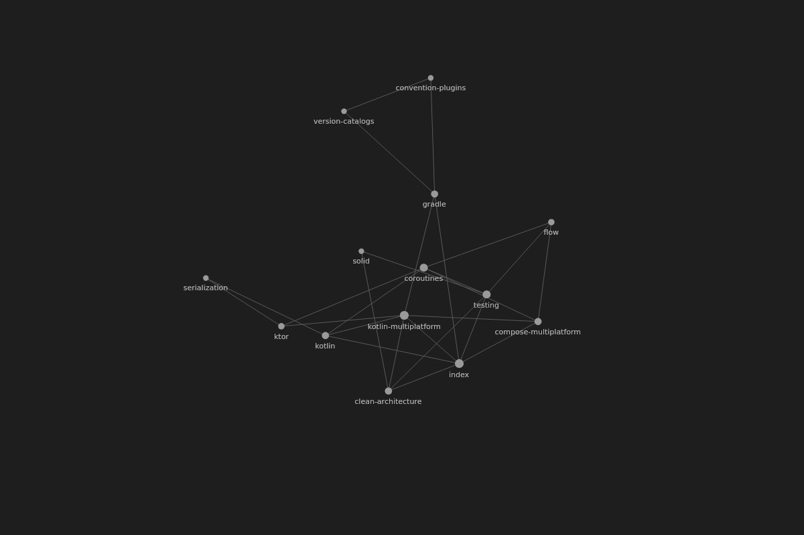
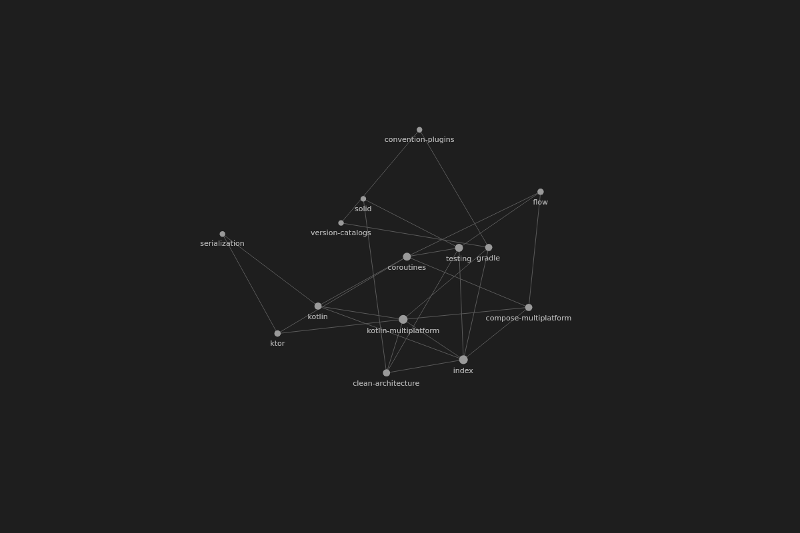

Kotlin Multiplatform
Ранний адоптер и чемпион KMP: занёс технологию в банк — общий модуль EWalletKmp питает Android- и iOS-клиенты кошелька.
Привет, я Сабурджон.
Продуктовый инженер: общий Kotlin-код для Android и iOS, забота об UI/UX и разработка, выстроенная вокруг ИИ-агентов.
Худжанд, Таджикистан · Eskhata Bank, команда Mobile Platform
Ранний адоптер и чемпион KMP: занёс технологию в банк — общий модуль EWalletKmp питает Android- и iOS-клиенты кошелька.
Придумал и сам внедрил AI Code Review в CI банка: Claude читает весь контекст проекта, а не только diff, — ревью каждого PR в 48 раз быстрее, ожидание сократилось на 98%.
Перевожу легаси-монолиты на современный стек — Compose, Ktor, модуляризация, статанализ — стратегией strangler, не останавливая продукт.
Не прощаю плохой UX: island-эстетика, анимации, нативные жесты; каждую фичу проверяю на реальных устройствах.
Один Kotlin. Обе платформы.
Общий Kotlin-код
домен · данные · сеть — одна кодовая база
Android
нативный UI на Jetpack Compose
iOS
нативный UI на SwiftUI
Логика — общая. UI — нативный.
Путь начал ещё студентом — волонтёром в отделе разработки Худжандского политеха (оттуда вырос DicTeach). Bank Eskhata, Худжанд — почти пять лет в одной команде: волонтёр (ноябрь 2021) → стажёр → Junior → Middle → Senior Android-разработчик с ноября 2025; менторство джунов. Траектория технологий: C#/.NET → Kotlin/Android → Kotlin Multiplatform → сейчас осваиваю Swift/iOS.
Одна шкала: 15 минут. Штриховка — диапазон от 10 до 15 минут.
Модернизировал Gradle: buildSrc → build-logic, convention plugins и non-transitive R. Время сборки проекта сократилось с 10–15 минут до 1 минуты.
В core-команде Eskhata Online выполняю функции тимлида и техлида: помогаю разработчикам, участвую в технических решениях и развиваю процессы мобильной разработки.
За последние два года проводил технические собеседования с местными и зарубежными Android-разработчиками. Участвовал в найме более 10 зарубежных специалистов, проводил онбординг и оценку компетенций разработчиков.
Проектировал решения для сложных задач, работал над общей навигацией и внедрением новой дизайн-системы. Консультировал другие команды и неоднократно проводил аудит SDK внешних вендоров.
Создал единый стандарт GitFlow для Android- и iOS-проектов банка, развивал CI/CD мобильного приложения. Выполнял обязанности Release Manager и Scrum Master.
Участвовал в тестировании приложения, представлял фичи команды на Demo Day, предлагал и внедрял улучшения.
×48
быстрее код-ревью с ИИ
98%
меньше ожидания ревью
5
лет в одной команде


Первый force-directed граф для Compose Multiplatform (Android · iOS · Desktop): ядро физики без единой зависимости с Barnes-Hut O(n log n), Compose-рендерер и парсер Obsidian-вольтов. Apache-2.0, опубликована в Maven.
GitHub ›Суперприложение Eskhata Bank в Google Play: платежи и переводы, карты, рассрочка, сбережения. Мои зоны: модули переводов и платежей, миграции сборки (Version Catalog, производительность Gradle), архитектурные ревью и общий KMP-код для Android и iOS.
Google Play ›Словарь-разговорник на трёх языках — таджикский, русский, английский — для Худжандского политеха. Опубликован в Google Play.
Собственная AI-IDE для macOS на SwiftUI: оркестратор классифицирует запросы по сложности и маршрутизирует между локальными моделями (Ollama) и облачными LLM — со sticky-роутингом, прогревом предсказанной модели во время набора и авто-фолбэком на локальные при потере сети.
Рабочая модель — tech lead и архитектор, чья команда — ИИ-агенты: декомпозиция задач на параллельные агентские сессии, петли верификации, эволюционная архитектура — и финальная ответственность на мне.
Любая задача начинается со спеки: от пары строк с одним критерием приёмки до полного конвейера с чекпоинтами. Критерии — в нотации EARS: каждое требование проверяемо.
Работаю с ИИ-агентами каждый день: параллельные сессии, очередь задач, сквозной цикл «код → merge → deploy → тест на устройстве». Для важных решений — панель независимых агентов и судей.
AI-ревьюер для CI, собственная AI-IDE, автоматизация рутины: если инструмента не хватает, я его делаю.
ИИ ускоряет, но не решает: тесты, статанализ, adversarial-ревью перед первым запуском CI — и финальное слово всегда за инженером. Даже физику графа проверяю кадрами рендера в CI, а не на глаз.
Хороший продукт собирается из деталей.
Худжандский политехнический институт Таджикского технического университета — бакалавр программной инженерии (2020–2024), красный диплом.
Беру проекты под ключ: мобильные приложения на Kotlin Multiplatform (Android + iOS из одной кодовой базы), сайты, Telegram-боты и автоматизация. От идеи до продакшена: спека, дизайн, код, деплой.